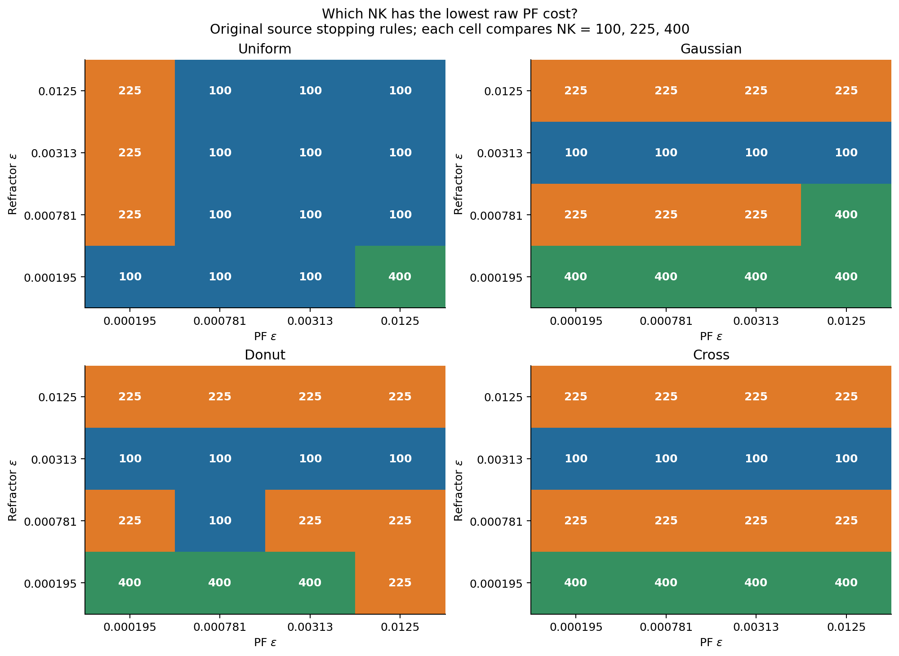
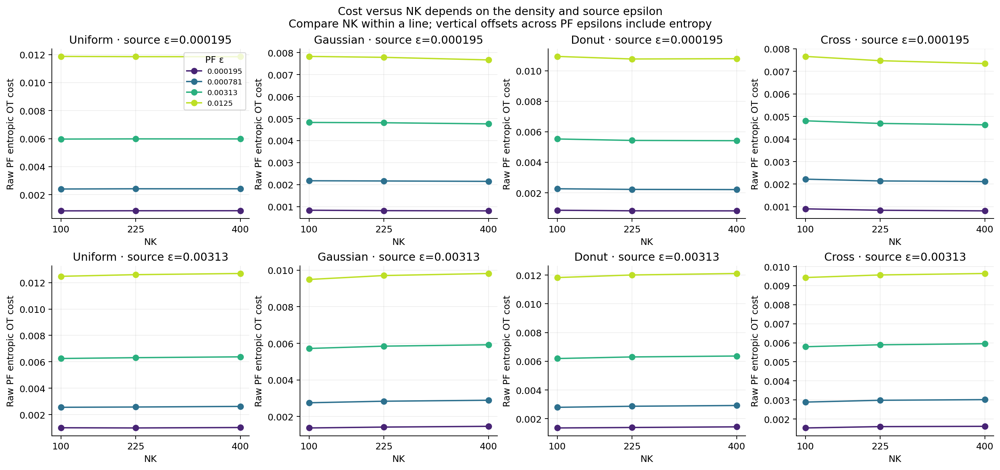
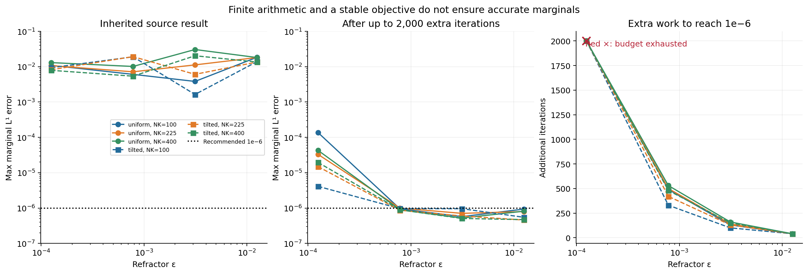
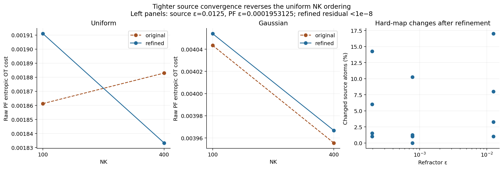
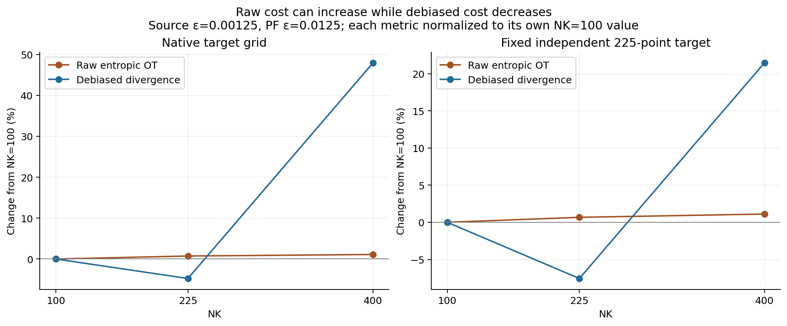
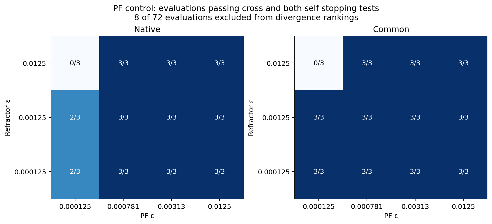

LOCAL RESEARCH · 6 OCTOBER 2026 · κ = 0.6
Refractor cost depends on discretization, entropy and convergence
The completed controls do not support a universal “larger NK gives lower cost” rule. Changing the target density, source epsilon or PF epsilon can change the ranking. Tighter source convergence can also reverse it.
This report plots existing side-research CSVs. It performs no new solves and changes no production solver or stopping defaults. This tracked archive preserves the completed output from the original Git-ignored .research/refraction/ folder. These are finite exploratory controls, not universal convergence claims.
| Investigation | Completed scope | Accuracy qualification |
|---|
| Target density | 4 targets × 3 NK × 4 source ε; 192 PF evaluations | All PF tests pass; all 48 inherited source residuals exceed 1e−6 |
| Source continuation | 24 uniform/tilted cases; up to 2,000 extra iterations | 18 reach 1e−6; 6 exhaust the budget |
| Dense refinement | 12 source controls, uniform/Gaussian | All refined full-plan residuals below 1e−8 |
| PF bias and target-grid control | 72 evaluations; native and common targets | 64 pass cross and both self tests; 8 excluded |
1. Density and both epsilons change the NK ranking
The source density is uniform; targets use the active uniform, Gaussian, donut and cross factories on the original spherical patches. NK is 100, 225 or 400. Both epsilon grids are {0.0001953125, 0.00078125, 0.003125, 0.0125}. Each heatmap cell selects the smallest raw PF cost among the three NK values; it is a within-cell comparison, not a comparison between epsilons.

Best NK by target, source epsilon and PF epsilon. Colors identify NK; cell numbers give the selected value. SVG · PNG
For Gaussian targets at source ε=0.0001953125, NK=400 has the lowest cost at every tested PF epsilon. At source ε=0.003125, NK=100 has the lowest cost instead. Uniform and donut targets also change their preferred NK with PF epsilon. The curves below show two source-epsilon slices, making the different directions visible.

All three NK values, with separate PF-epsilon curves, at the smallest and an intermediate source epsilon. SVG · PNG
The 48 inherited source residuals range from roughly 0.00128 to 0.03056. These rankings describe the inherited approximate hard maps. The heatmaps do not certify the physical optimum or imply that the same winner persists on finer grids.
2. A potential-change threshold can stop before marginal feasibility
The continuation study covers NK={100,225,400}, uniform/tilted densities and four source epsilons spanning 0.000125–0.0125. It continues the existing imported iteration and independently evaluates both full-plan marginal errors. At the smallest epsilon, all six cases remain above 1e−6 after 2,000 additional iterations, despite finite arithmetic.

Inherited and continued maximum marginal L1 errors, plus the additional iteration counts. Red crosses identify budget exits. SVG · PNG
For uniform NK=225, residuals 0.01813 and 0.01123 at source ε=0.0125 and 0.003125 require another 40 and 140 iterations to reach 1e−6. The inherited potential threshold becomes satisfied earlier, at residuals approximately 0.000421 and 0.001998. A nearly stable objective therefore does not replace an actual marginal check.
A practical default for normalized balanced measures is:
max(||π1 − p||₁, ||πᵀ1 − q||₁) ≤ 10⁻⁶
Check every 5–10 iterations and at return. For close cost rankings, use 1e−8 and verify with a tighter run. Retain a configurable iteration budget around 2,000 and return explicit nonconvergence if it is exhausted. Small epsilon may need continuation, warm starts or a larger budget. Evaluate raw cross-OT potentials with the full kernel, including screened entries, in the log domain. Potential change and objective change are secondary diagnostics. These recommendations are not implemented here.
3. More accurate source solves can reverse a ranking
The research-only dense refinement starts from inherited raw potentials, then performs untruncated alternating logsumexp updates to residual below 1e−8, capped at 3,000 iterations. All 12 selected controls reach the residual threshold. This is a different control from continuing the inherited screened iteration above.

Inherited versus refined PF costs and the fraction of hard-map assignments changed by refinement. SVG · PNG
At uniform target, source ε=0.0125 and PF ε=0.0001953125, the inherited costs favor NK=100 (0.0018612772) over NK=400 (0.0018829629). Refinement reverses that order: NK=400 costs 0.0018332828, versus 0.0019109488 for NK=100. Up to roughly 17% of source atoms change their assigned target in the controls; some controls show no assignment changes. Consequently, inherited cost ordering can contain convergence error as well as discretization effects.
4. Raw entropic cost and debiased cost answer different questions
The PF study evaluates raw KL-regularized OT and the divergence formed by subtracting half of each measure’s self cost. It compares the native target grid, which changes with NK, with a fixed independent 225-point Halton target grid (skip=5000). All evaluations use squared Euclidean cost on 3D spherical points.

Relative change from NK=100, separately normalized for raw OT and divergence. Lower is better within each metric; the metrics have different absolute scales. SVG · PNG
At source ε=0.00125 and PF ε=0.0125, native raw OT increases from 0.01200766 to 0.01209485 when NK increases from 100 to 225, while divergence decreases from 1.1276e−5 to 1.0737e−5. The fixed reference reproduces this pattern: raw OT increases from 0.01201524 to 0.01209576, while divergence decreases from 1.0710e−5 to 9.901e−6. Thus changing the native target grid is not the only explanation.
Across 22 complete three-NK comparisons, raw OT decreases monotonically with NK in 6, divergence in 11, and the two complete rankings disagree in 12. For fixed measures, the exact KL-regularized value is nondecreasing and concave in PF epsilon: it is the infimum of affine functions with nonnegative KL slopes. This statement does not order different NK values, because their measures change.

Counts passing the existing cross and both self stopping tests. Failed evaluations are retained in the CSV and excluded from divergence rankings. SVG · PNG
The PF control has 64 successful and 8 excluded evaluations. Its exploratory default is 1,200 iterations with potential-change tolerance 1e−8; some cached probes use 2,500 and 1e−9. Passing these tests is not a certificate under the proposed marginal criterion. No transport-only coupling cost was measured, so raw OT minus divergence represents the self-cost correction, not a measured entropy/transport decomposition.
5. Methods, limitations and reproducibility
All source computations reuse the active pipeline, original geometry, κ=0.6 and nested Halton samples. Pushforwards use the inherited hard c-transform map. Source density variation in the convergence probe uses smooth tilted weights. The PF study covers the original uniform problem; lower κ variants and NK=900 were configured but are not part of its 72 completed rows. No universality across geometries or κ is established.
The density CSV’s source_objective is a reconstructed raw cross dual bound, not the production identity-corrected total_cost. With infeasible marginals it is not a certified primal cost. The PF control’s self evaluations are distinct from the inherited source solver’s identity corrections. The latter should not be assumed to define a conventional certified Sinkhorn divergence.
For a stronger follow-up comparison: hold density, geometry and PF epsilon fixed; use a common independent finer target; solve the source to verified marginal tolerance; report both raw and debiased costs; and repeat close rankings at tighter tolerance. A common target is still an empirical approximation, and a three-NK grid cannot establish asymptotic convergence.
Primary references retained from the investigations: POT implementation, Schmitzer on stabilized scaling, Altschuler–Weed–Rigollet on Sinkhorn approximation, and Feydy et al. on Sinkhorn divergences. The numerical claims in this report come from the local CSVs.